×

This section presents the results obtained from the air pollution analysis conducted using GIS and WebGIS technologies. The outputs include spatial distribution maps of NO₂, PM10, and PM2.5, land cover change detection results, and population exposure analysis. These visualizations provide insights into atmospheric pollution patterns and their potential relationship with land cover dynamics and population distribution across the study area.
Air quality due to their significant impacts on human health and the environment. In this study, annual mean concentration data for these pollutants were used to investigate spatiotemporal changes across Austria between 2021 and 2023.Monthly raster datasets for each pollutant were obtained from the Copernicus Atmosphere Monitoring Service (CAMS) European Air Quality Reanalysis database. The downloaded datasets were processed and clipped to the Austrian national boundary using QGIS. All analyses were conducted using the EPSG:4326 (WGS 84) coordinate reference system. For each pollutant, annual mean concentration rasters were generated by averaging the twelve monthly datasets corresponding to each year. Subsequently, the resulting annual mean rasters were classified according to threshold values defined by European Union air quality standards. To evaluate temporal changes in air pollution levels, Annual Mean Aggregation Change (AMAC) maps were produced by subtracting the 2021 annual mean raster from the corresponding 2023 raster.
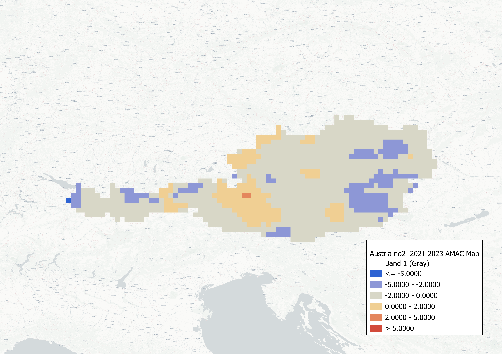
Click on the map to view the full-size image.
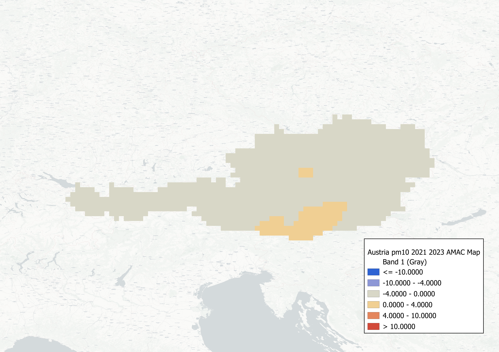
Click on the map to view the full-size image.
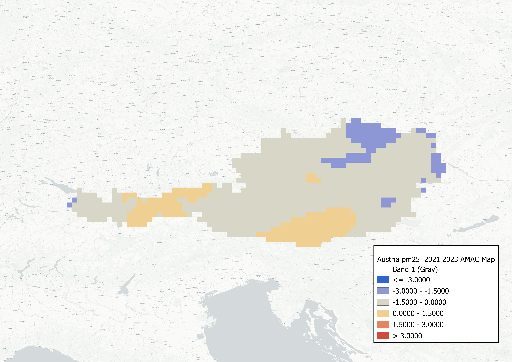
Click on the map to view the full-size image.
The resulting change maps represent the magnitude and direction of pollutant concentration changes over the study period. Positive values indicate an increase in pollutant concentrations and a potential deterioration in air quality, whereas negative values indicate a decrease in concentrations and therefore an improvement in air quality conditions
The AMAC analysis indicates that air quality conditions in Austria remained generally stable between 2021 and 2023. Among the three pollutants, NO₂ exhibited the highest spatial variability, with both localized increases and decreases observed across the country. PM2.5 showed a similar pattern but with more limited changes, while PM10 remained the most stable pollutant throughout the study period. Overall, the detected changes were concentrated in specific regions rather than being widespread, suggesting that air pollution dynamics during the study period were primarily driven by local factors rather than large-scale national trends.
You can click the links below to view the maps generated for the Spatiotemporal Trend Analysis.
Land cover change detection analysis revealed significant transitions in land surface characteristics between 2021 and 2023. Notable changes included urban expansion, deforestation, and agricultural land conversion. These land cover dynamics were spatially correlated with observed air pollution patterns, suggesting potential interactions between land use changes and atmospheric pollutant distribution.
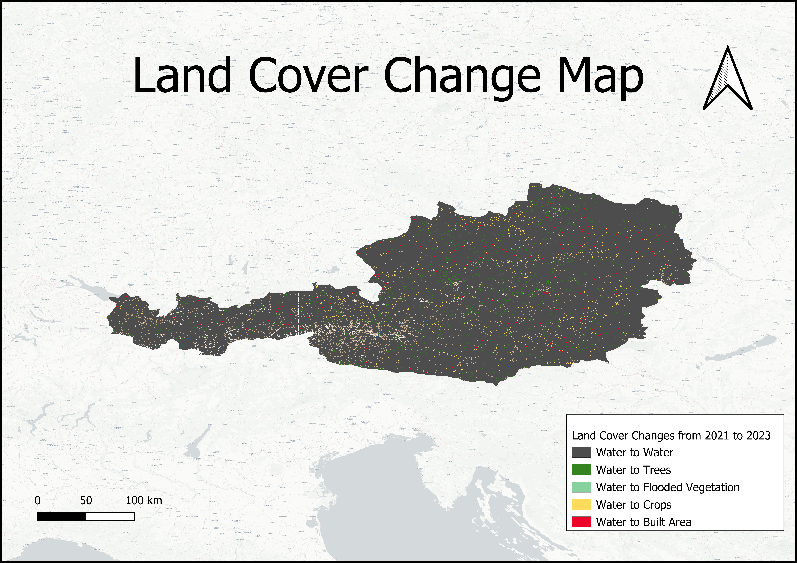
Click on the map to view the full legend.
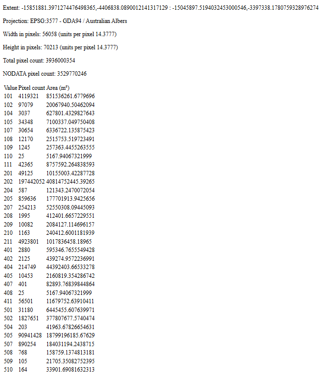
The second dataset used in this study was the Land Cover data obtained from the ArcGIS Living Atlas of the World. The tiles corresponding to the study area for the years 2021 and 2023 were downloaded and clipped to the Austrian boundary in QGIS. Similar to the air pollution analysis, the EPSG:4326 (WGS 84) coordinate reference system was used during the preprocessing stage.A land cover change detection raster was generated using the Raster Calculator tool by comparing the 2021 and 2023 land cover datasets. Based on the resulting change raster, a statistical report was produced to analyze stable, gained, and lost areas for the selected land cover classes, namely Built Areas, Trees, and Crops. Cloud-covered areas (Land Cover Class 10) were excluded from the analysis to avoid introducing uncertainty into the results.To enable accurate area calculations, the dataset was reprojected from EPSG:4326 to a metric coordinate reference system, EPSG:3577 (GDA94 / Australian Albers), allowing area values to be calculated in square meters (m²). The resulting statistics were then used to generate area-based reports, and the final results were summarized and presented in tabular form.
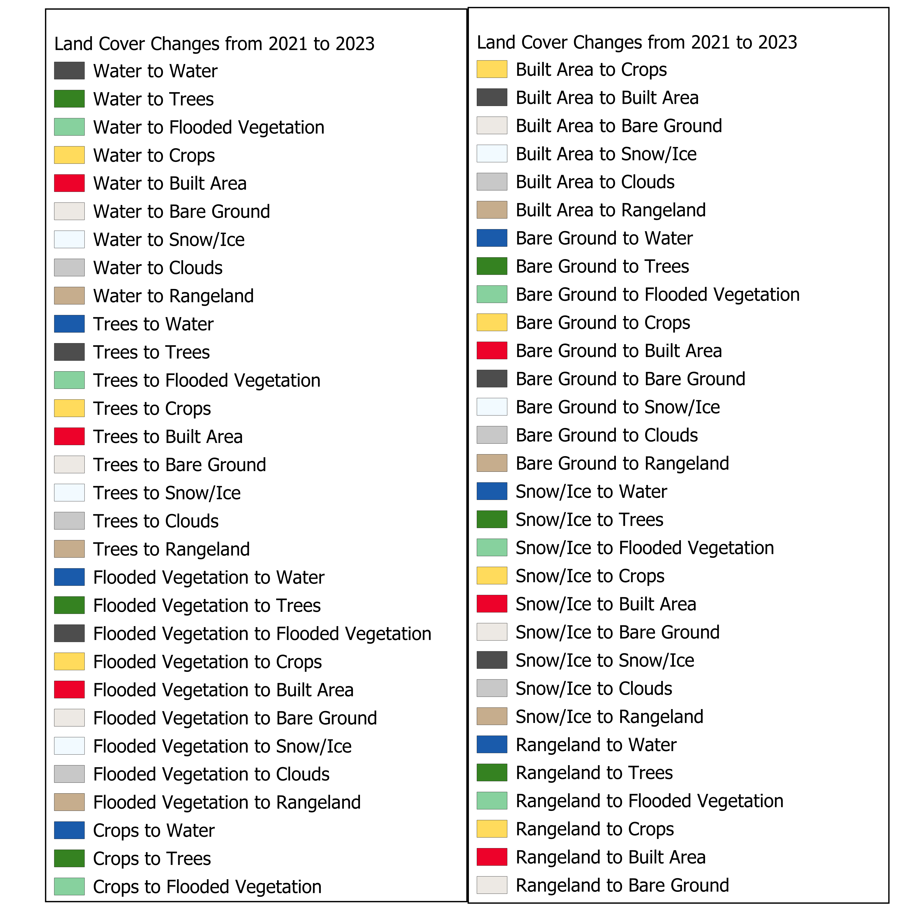
| Indicator | Area % |
Category | Area (m²) |
|---|---|---|---|
| Stability (Persistence) | 96.34 | Trees (Code 2) | 40,814,752,445 |
| Primary Source of Gain | 65.68 | Rangeland (Code 11) | 1,018,988,702 |
| Secondary Source of Gain | 24.35 | Crops (Code 5) | 377,807,677.6 |
| Primary Destination of Loss | 80.73 | Rangeland (Code 11) | 1,017,836,458 |
| Third Source of Gain | 4.86 | Snow/Ice (Code 9) | 75,468,471.24 |
| Secondary Destination of Loss | 14.09 | Crops (Code 5) | 177,701,913.9 |
| Third Destination of Loss | 4.17 | Built Area (Code 7) | 52,550,308.09 |
| Indicator | Area % |
Category | Area (m²) |
|---|---|---|---|
| Stability (Persistence) | 95.50 | Crops (Code 5) | 18799196186 |
| Primary Source of Gain | 58.56 | Rangeland (Code 11) | 518738453.3 |
| Secondary Source of Gain | 20.06 | Built Area (Code 7) | 177701913.9 |
| Third Source of Gain | 20.02 | Crops (Code 5) | 177352767.9 |
| Primary Destination of Loss | 42.89 | Trees (Code 2) | 377807677.6 |
| Secondary Destination of Loss | 35.45 | Rangeland (Code 11) | 312267233.8 |
| Third Destination of Loss | 20.89 | Built Area (Code 7) | 184031194.2 |
| Indicator | Area % |
Category | Area (m²) |
|---|---|---|---|
| Stability (Persistence) | 93.57 | Built Area (Code 7) | 477565697.4 |
| Primary Source of Gain | 56.04 | Crops (Code 5) | 184031194.2 |
| Secondary Source of Gain | 16.00 | Trees (Code 2) | 52550308.09 |
| Third Source of Gain | 15.08 | Rangeland (Code 11) | 49524375.47 |
| Primary Destination of Loss | 58.18 | Crops (Code 5) | 177352767.9 |
| Secondary Destination of Loss | 19.86 | Rangeland (Code 11) | 60317309.49 |
| Third Destination of Loss | 16.86 | Trees (Code 2) | 51379046.02 |
The results indicate that Austria's land cover remained largely unchanged during the study period, with only localized transitions observed among vegetation and agricultural land classes. Although some urban growth was detected, the dominant changes were associated with natural vegetation dynamics and agricultural land-use conversions.
The generated land cover concentration map was processed using the Raster Calculator to create three separate mask layers corresponding to Built Areas, Crops, and Trees. Zonal Statistics was then applied to each mask layer to calculate the mean, minimum, and maximum values of pollutant concentration change. The resulting statistics were visualized through bar charts and analyzed to evaluate the relationship between land cover dynamics and changes in air pollutant concentrations.
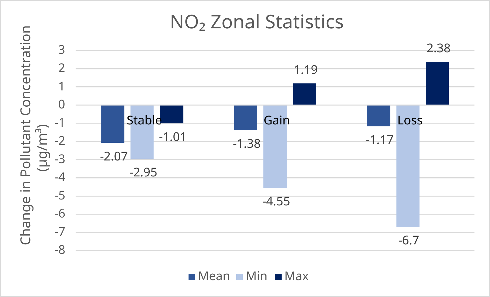
Click on the graphic to view the full-size image.
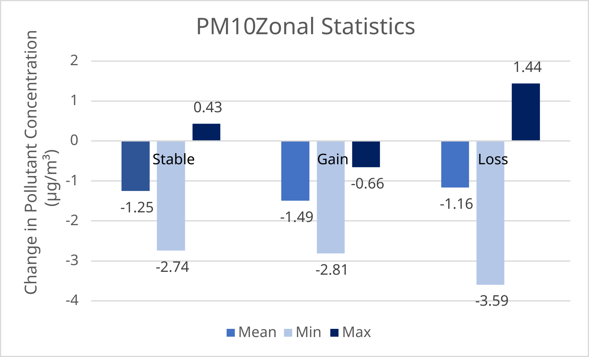
Click on the graphic to view the full-size image.
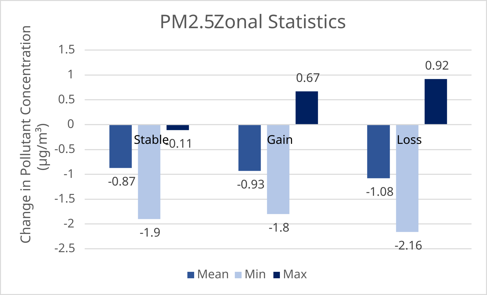
Click on the graphic to view the full-size image.
The zonal statistics reveal a consistent decrease in pollutant concentrations across all land cover change categories. For NO₂, PM10, and PM2.5, the negative mean values indicate that air quality generally improved between 2021 and 2023.
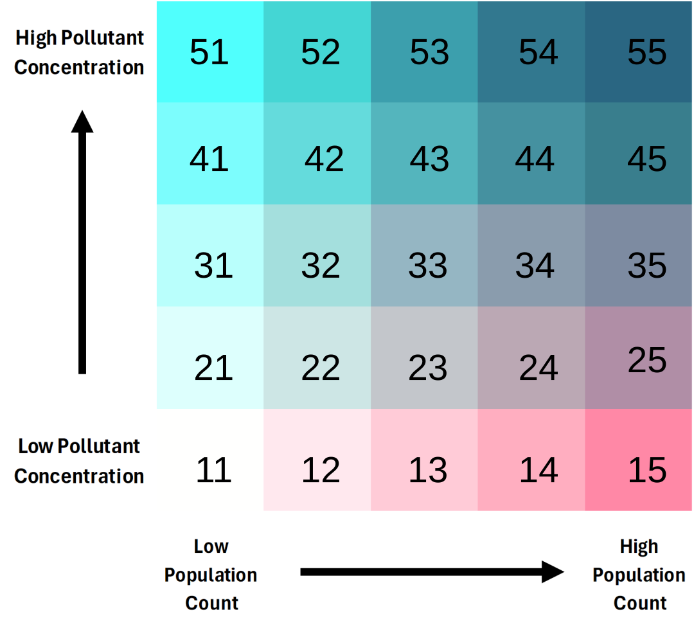
The third dataset used in this study was the population data obtained from WorldPop.org. The population raster was classified into five density classes and combined with the 2023 Pollutant Concentration Map to produce a Bivariate Map.This map highlights the spatial relationship between population density and pollutant concentrations, helping to identify areas where both variables are high. The legend is presented as a 5 × 5 matrix, where one axis represents population density and the other represents pollutant concentration levels. Darker colors indicate areas with both higher population density and higher pollution levels, while lighter colors represent lower values of both variables.
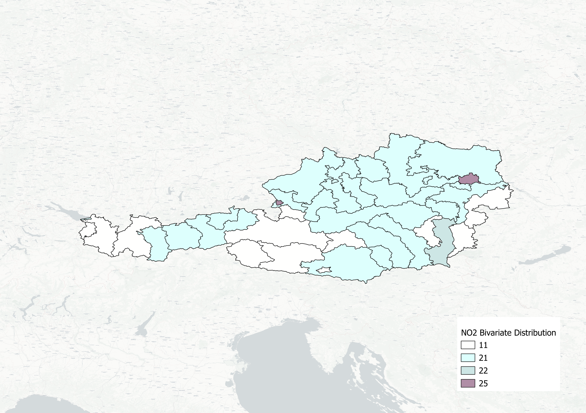
Click on the map to view the full-size image.
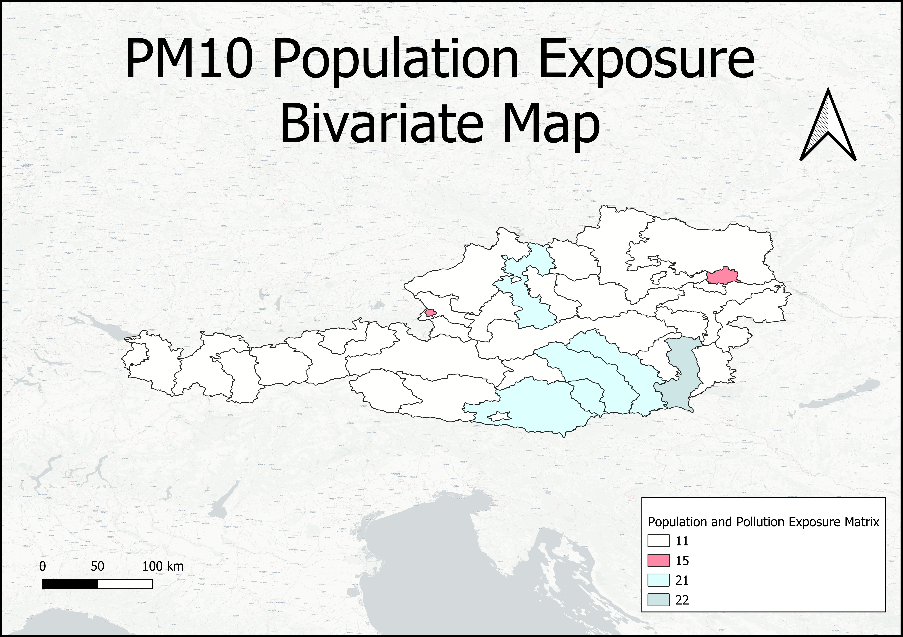
Click on the map to view the full-size image.
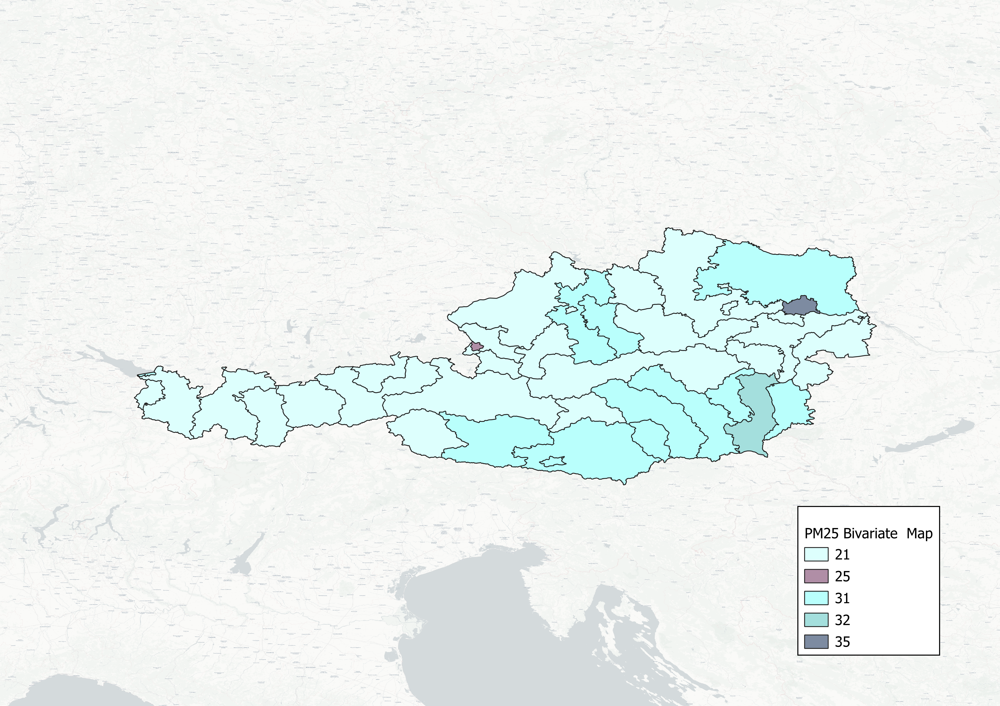
Click on the map to view the full-size image.
When the three maps are evaluated together, it can be observed that most of Austria's population is exposed to low to moderate levels of air pollution. The highest exposure classes are concentrated in the districts of Wien and Salzburg, which are also among the most densely populated urban areas in the country.Among the pollutants analyzed, PM2.5 shows the strongest association with population density, with the highest exposure levels occurring in densely populated regions. Overall, the results suggest that pollution-related health risks are not widespread across Austria; however, certain urban centers may require closer monitoring due to their relatively higher exposure levels.
The Level 2 administrative boundary dataset of Austria, obtained from the FAO GAUL database, was used together with the population dataset to analyze population exposure to air pollution. Using the Zonal Statistics tool, population data were combined with the classified pollutant concentration maps to identify the distribution of population exposure across different pollution classes.The resulting dataset was subsequently processed using the Dissolve operation to aggregate areas belonging to the same exposure category. Based on these results, Proportion of Population Exposure Classes for Pollutants charts were generated to illustrate the percentage of the population exposed to different levels of air pollution across Austria.
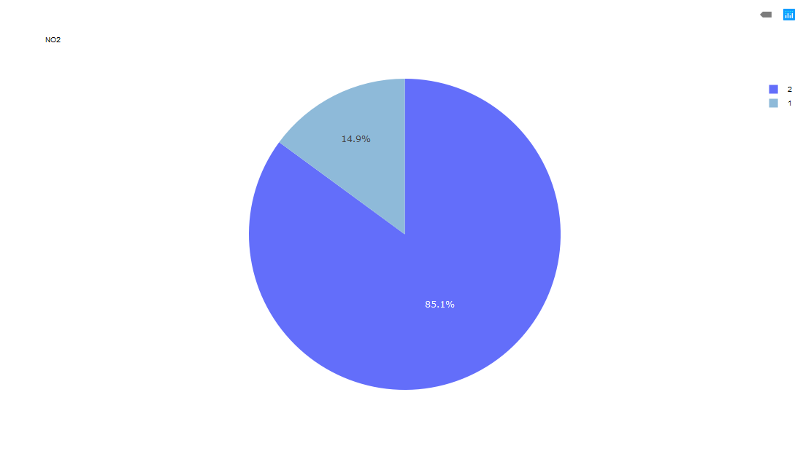
Click on the map to view the full-size image.
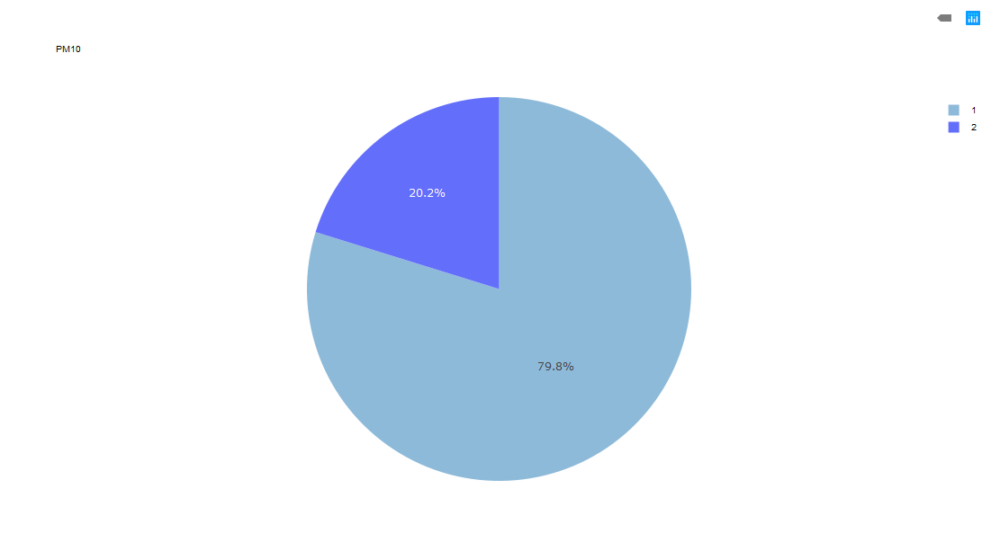
Click on the map to view the full-size image.
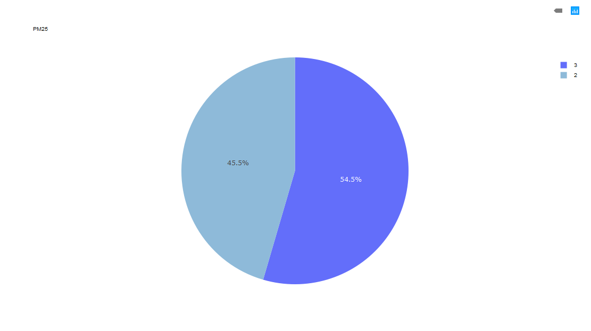
Click on the map to view the full-size image.
The population exposure charts indicate that PM10 exposure is generally low across Austria, with nearly 80% of the population belonging to the lowest exposure class. NO₂ exposure is relatively uniform, with most residents concentrated in a single exposure category. In contrast, PM2.5 shows the highest population exposure levels, with more than half of the population falling into the higher exposure class. Overall, the results suggest that PM2.5 may represent the most significant air quality concern among the pollutants analyzed.
Access the interactive WebGIS platform to explore the spatial datasets, analysis results, and thematic maps developed within this project.
Interactive Map